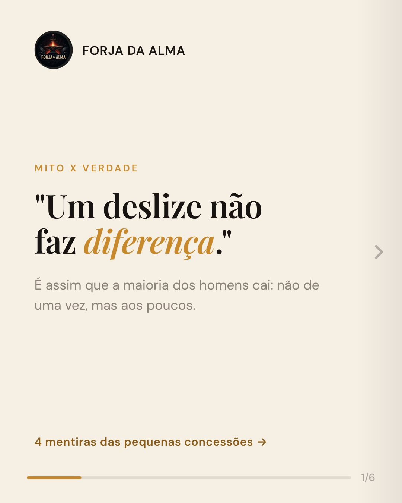
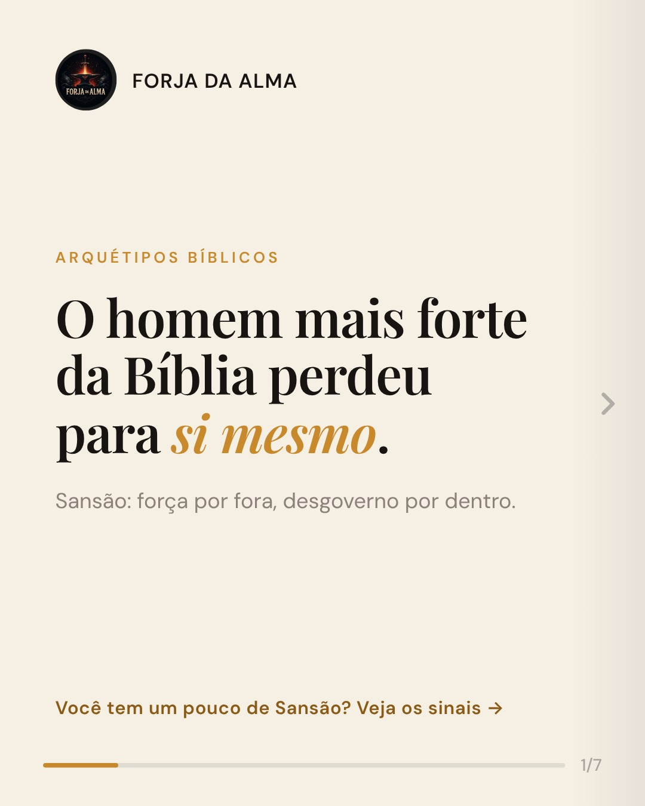
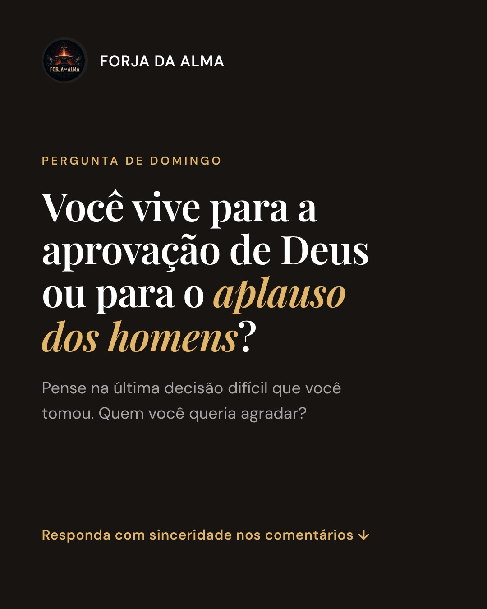

Forja da Alma é um perfil cristão para homens que querem viver com firmeza, responsabilidade e fé. Todo dia, conteúdo curto e direto, fiel às Escrituras, sem frescura.
Como o ferreiro transforma o ferro bruto em ferramenta útil, a Palavra de Deus forma o caráter do homem. Nosso conteúdo se apoia em três compromissos.
Nada do que publicamos contradiz a Bíblia. Versículos são citados na Almeida Revista e Atualizada.
Apresentamos o posicionamento bíblico com clareza, respeitando quem pensa diferente.
Liderança no lar, trabalho, finanças, amizade, pureza e oração: coisas para aplicar hoje.
Às 9h sai o post do dia. Às 19h sai o vídeo da noite, com uma mensagem completa em menos de um minuto.
Alguns dos posts mais recentes publicados nas nossas redes.



O mesmo conteúdo, adaptado para cada plataforma.
"Forja" é a ferramenta interna do Forja da Alma. Ela cria as artes e os vídeos do perfil e os publica nas nossas próprias contas. Não é oferecida ao público e não acessa contas de terceiros.
O conteúdo do dia é escrito e revisado, e a ferramenta gera a arte (1080×1350) e o vídeo vertical (1080×1920).
O dono do perfil entra com a própria conta do TikTok (Login Kit) e autoriza a publicação de vídeos.
O vídeo é enviado pela Content Posting API para a conta @forjadaalma8, com legenda e hashtags.
Leia os Termos de Uso e a Política de Privacidade.